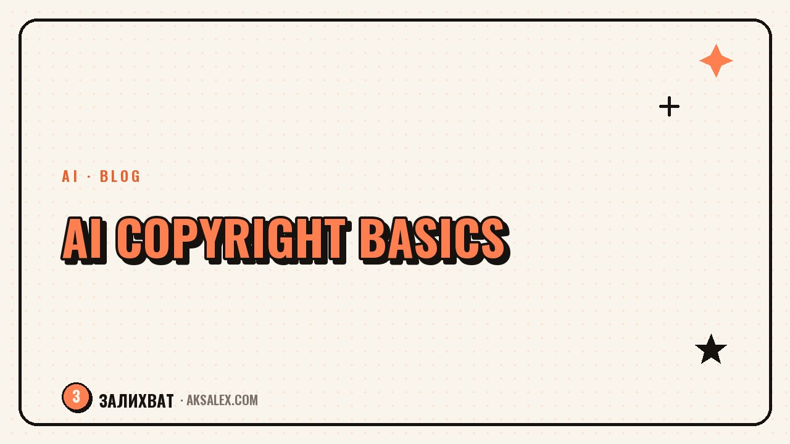

Copyright and AI: What's Allowed on Your Blog

Why this even matters for a blogger
Bloggers publish often and in many formats: text, cover images, short videos, background music. If even part of that material is made with AI, it helps to understand the basic rules of the game - otherwise you could accidentally trigger a complaint to the platform, a takedown request, or a dispute with someone whose work was used to train the model or resembles the generated result.
This isn't about panic, just basic caution - the same care you'd apply to any third-party content you pull into your blog.
What to read in the service's own terms
Every text, image, or video generator has a user agreement that usually spells out who owns the rights to the output and what you're allowed to do with it. The terms differ from service to service and change from time to time, so it's worth reading this section at least once for the tools you use regularly.
| What to look for in the terms | Why it matters |
|---|---|
| Rights to the generated content | To know whether you can use the result commercially |
| Restrictions by subject matter | Some services ban generating real people or brands |
| Terms for paid vs. free plans | Rights sometimes differ depending on your subscription |
| The section on user responsibility | Who is liable if the result infringes someone else's rights |
It's not the most thrilling read, but ten minutes once per service saves you potential trouble later.
Real people, brands, and recognizable characters
The clearest risk zone is generating images of recognizable people, logos, or characters without permission. Even if the AI made the picture rather than you by hand, using someone's recognizable likeness in a commercial blog can raise questions from that person, the brand, or the platform where you post.
What lowers the risk
- Don't generate cover images with recognizable celebrities unless you genuinely need to
- Avoid other people's logos and trademarked characters in commercial materials
- For your own face and voice - use only with the consent of whoever's data is involved
- When in doubt, go with more neutral, abstract visuals
If you wouldn't risk dropping someone else's photo into a post without permission, an AI-generated image of that same person deserves the same careful treatment.
AI text and the question of originality
With text the situation is a bit simpler: an AI phrases sentences from scratch rather than copying someone's writing word for word. But that doesn't mean you can publish a raw AI response without edits. First, that kind of text often sounds impersonal and ranks poorly in search. Second, you should check the facts and figures the AI offers - it can be wrong or serve up outdated information.
A good practice is to use AI as a helper for a draft or a structure, then rework the final text in your own words, adding your personal experience and examples. That keeps the text yours in both meaning and voice.
How to build a safe habit in your blog
A few simple rules help cut the risk without turning every post into a source of anxiety.
- Every few months, reread the terms of service for the tools you use
- Don't use other people's faces and brands in commercial materials without permission
- Double-check the facts an AI generates before publishing
- Keep drafts and an edit history - in case you ever need to show how a piece was created
- When you're genuinely unsure about a specific situation, consult a lawyer rather than guess
These habits don't require a law degree, but they noticeably reduce the odds of unpleasant surprises.
Above all, common sense
The rules around AI and copyright keep shifting, and there's no single standard yet that covers every case. But the general principle stays stable: treat a generated result with the same caution you'd apply to any third-party material - a photo, a text, or a piece of music you found online. That compass works even where specific rules haven't appeared yet.
Frequently Asked Questions
Can I use AI-generated images in a commercial blog?
In most cases yes, but it depends on the specific service's terms and on what's shown. Check the generator's user agreement and avoid recognizable people and other brands without permission.
Does text written by an AI infringe authors' rights?
An AI builds text from scratch rather than copying other people's articles word for word. Still, it's better not to publish raw text without edits - both for quality and for meaning, it pays to rework it in your own words and check the facts.
Do I need to state in a post that the material was made with AI?
Requirements differ across countries and platforms, and they sometimes change. It's smart to follow the rules of the specific platform where you publish and to disclose AI use wherever it's clearly required.
Can I generate an image of a famous person for a post's cover?
It's better to avoid this without explicit permission, especially in commercial content. A real person's recognizable likeness is a high-risk zone, even if the AI made the picture rather than you.
What should I do if I'm not sure whether it's legal to use a particular piece of material?
When you're genuinely unsure about a specific situation, consult a lawyer rather than rely on guesswork. For everyday posts, common sense and the habits listed above are usually enough.
Enjoyed this one? Here's what to read next. How to look at competitor blogs and actually get value: AI helps you break down someone else's content fast and find ideas for your own.
Read the article →not by hand